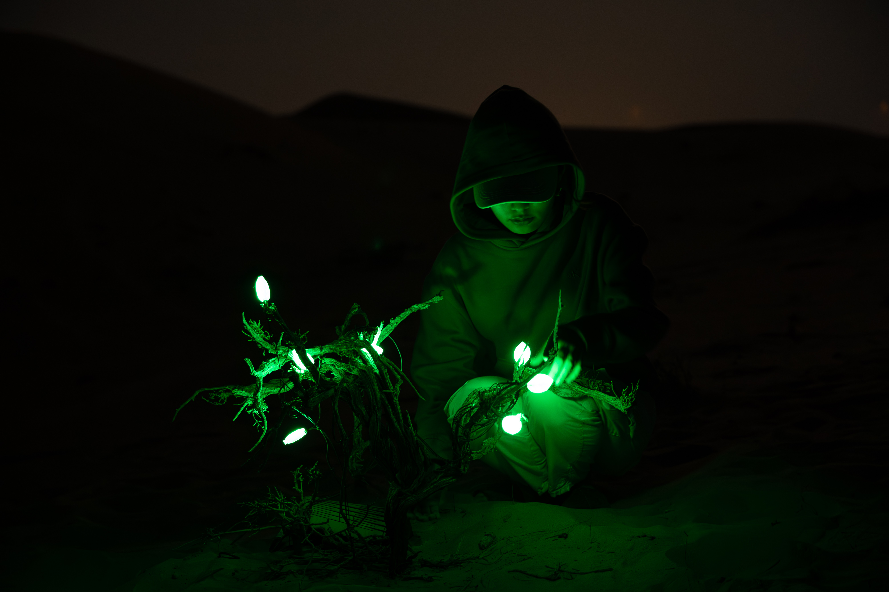
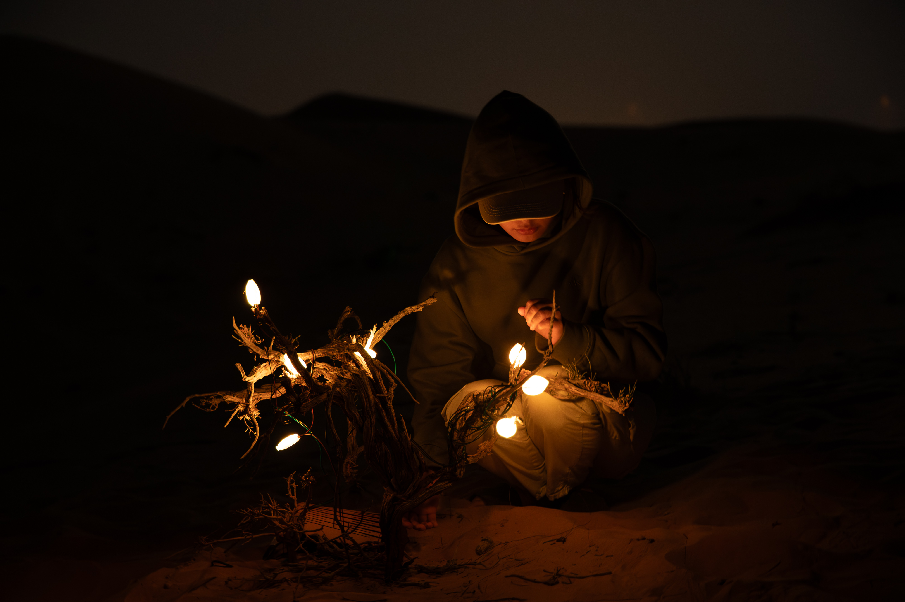
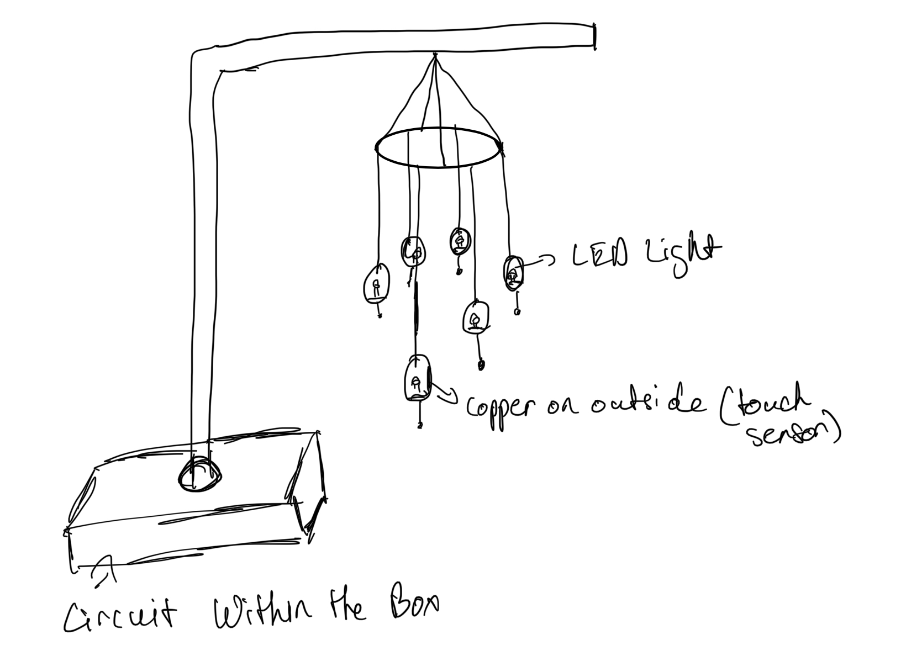
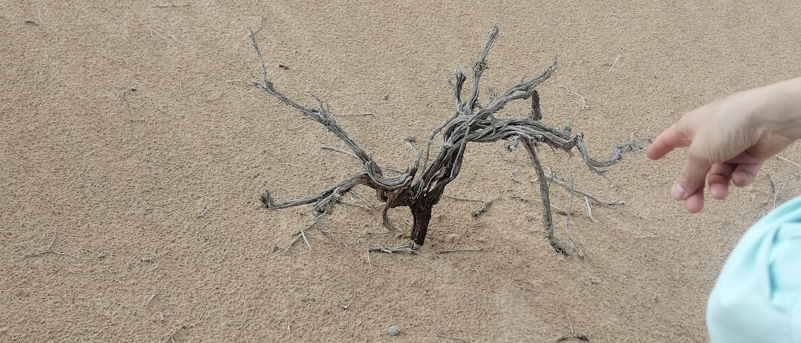
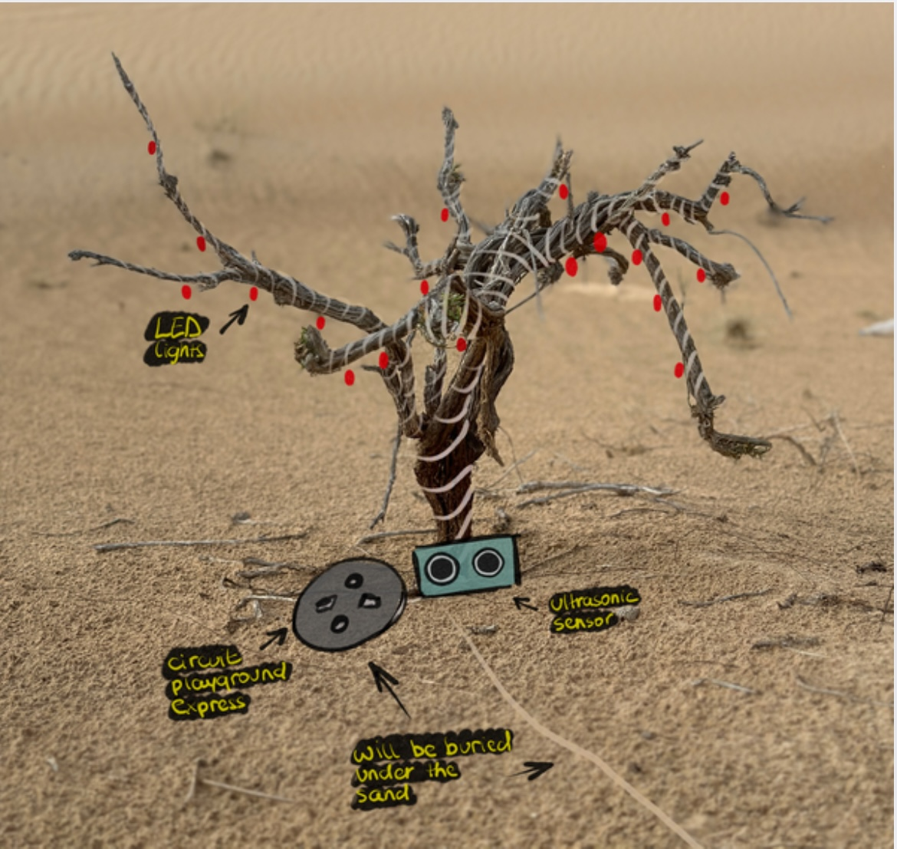
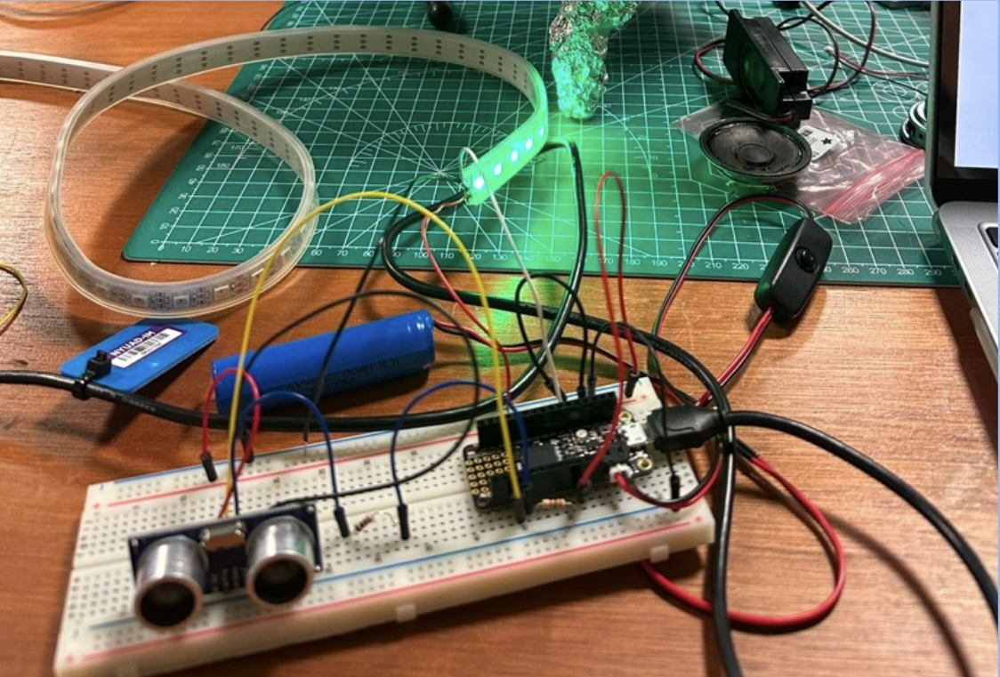
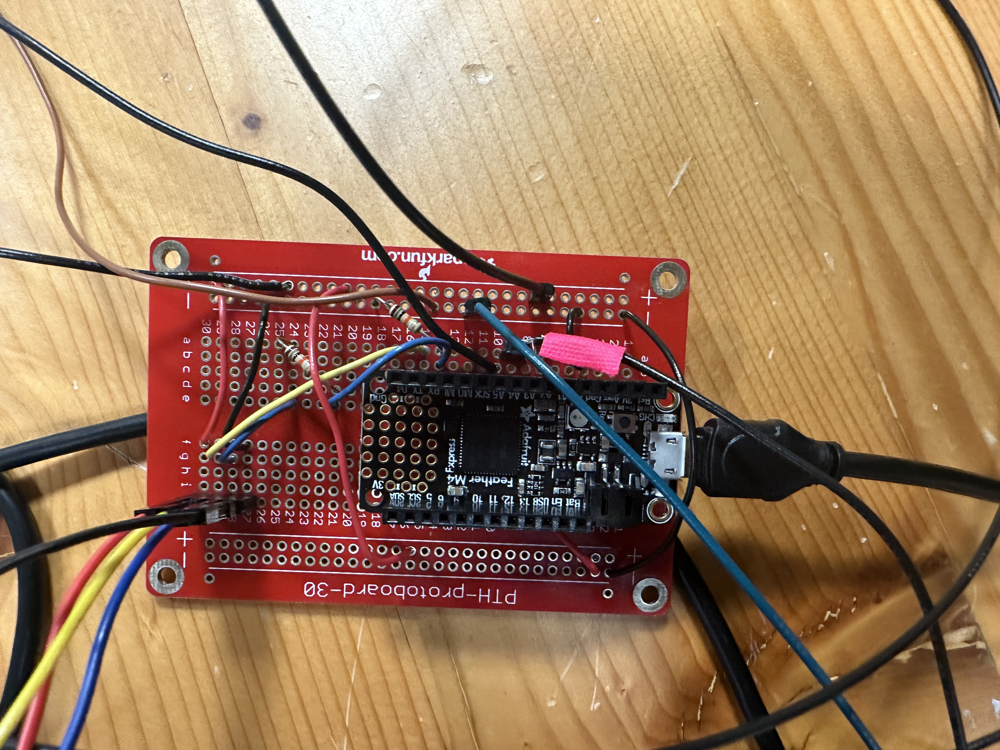
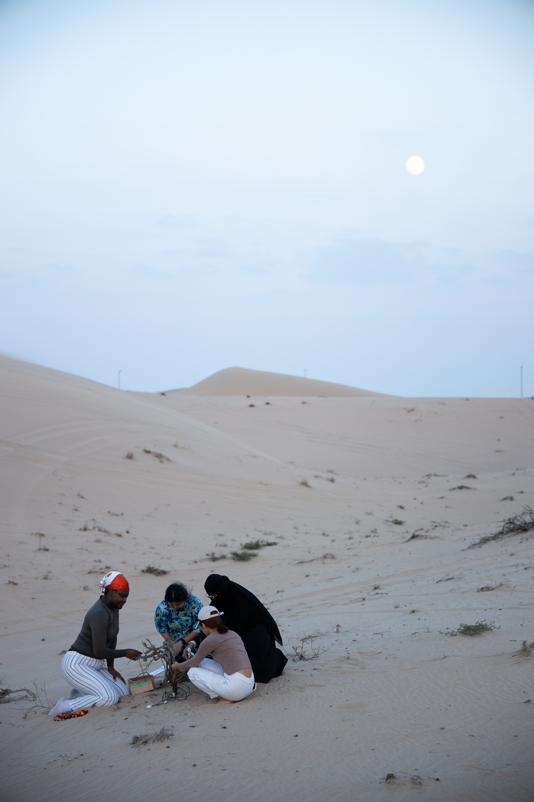
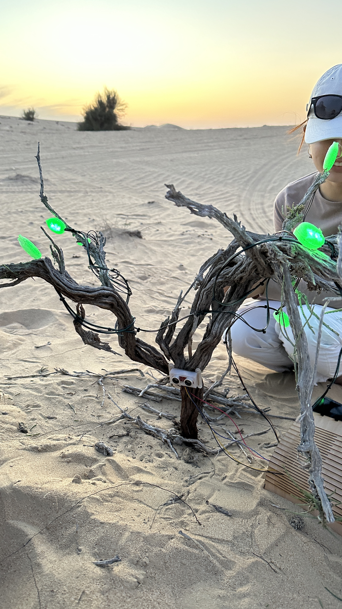
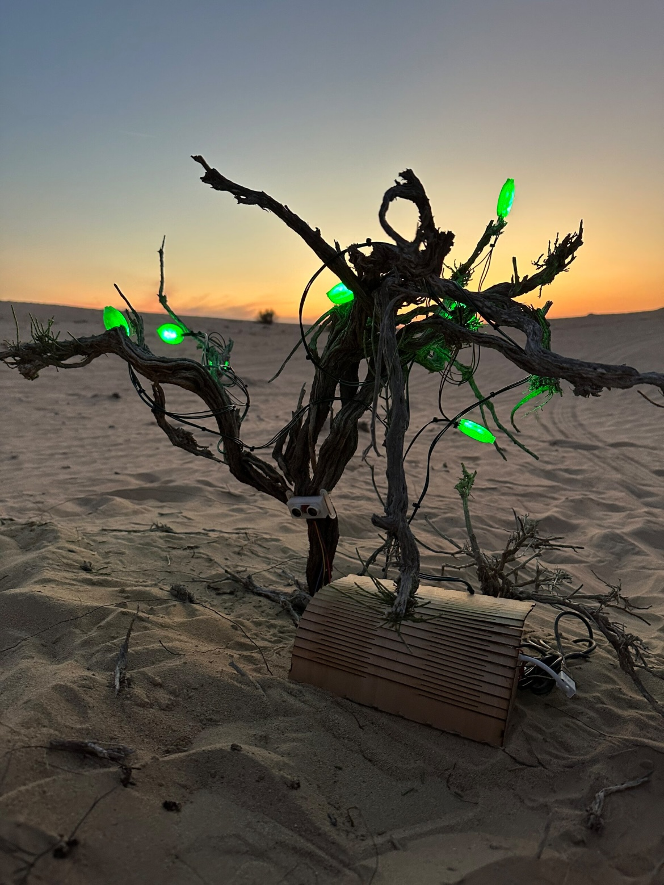

Overview: An interactive installation, centered around a single tree in the Sweihan Abu Dhabi desert, using sensors and LED lights to convey the tree’s limits of human interaction.
Developed as the final project of the Desert Media Art course, which teaches key technical aspects of design such as prototyping and documentation. After splitting into teams of four, we used these newfound skills to research, propose, produce and install an electronic artwork designed for Abu Dhabi’s Sweihan desert.


Early Steps
We each created our own individual ideas, mine of which was using wind chimes as a tool for the desert to voice itself.

Site Visit and Final Idea
After a visit to our installation site, we workshopped my early idea into an installation centered around a single tree we found.

Using LED lights wrapped in 3D printed leaves and an ultrasonic distance sensor, the installation became a visual way for the tree to communicate its boundaries as humans interact with it.
- Green: Tree is in a healthy state
- Yellow: Approaching tree’s interaction limit
- Red: Tree is in distress as interaction limit has been exceeded
The transition of the colors serve to make immediately visible the unseen stresses the environment endures due to human presence. Once the visitor walks away, the tree eventually returns to its earlier green and healthy state.

Building
I was once again on the technical side building the circuit, to include all the electronic pieces of the project. I then worked on writing the code in Circuit Python to calibrate the ultrasonic sensor, and use its values to change the colors of the LED lights.


After one of our teammates printed the leaves, I then combined them with the LED lights attached to the circuit, and tested them to ensure they changed colors as the distance and time spent at certain distances changed.
Together, we safely attached the pieces onto the tree for the
final exhibition day, as another of our teammates documented the process.


